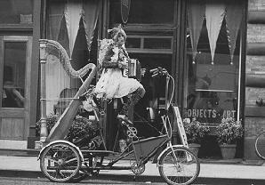

So there I was, riding home from work (uphill all the way), when my eye was caught by the sight of Baby Dee, a winged accordion-playing woman riding upon a 6-foot tall tandem tricycle with a harp lashed to the rear seat. Hot damn! The day was no longer boring! I quickly wheeled away and returned on the Organ Donor so that I could view her from up close.

Turns out that she was traveling with the Bindlestiff Family Cirkus, covering the streets to promote the show and earn a little beer money on the side. She certainly brought it home. She would pedal a quarter block or so until she came upon someone who didn't look like they would run, engage her parking brake, and play them a song. Each performance was special, but each ended with a lively "Hooray!" and a reminder that she was accepting gratuities, and on that cue she would swing round the fishing pole affixed to the handlebars and lower a little fishbowl filled with money.
Within a few blocks she was ready for a break, and after sowing the pennies on the sidewalk "to grow up and become big dollar bills", she bought herself a nice big can of malt liquor - and one for me, too, since I had been unabashedly adoring her for a while. We retired to the sidewalk to drink from our paper bags, and I found it quite instructive to watch the reactions of the passersby.
All too often, some repressed car driver would notice her and instantly turn away - can't blow your cool by openly showing interest in something different, after all! Of course, after a minute or so, when they thought that she wouldn't be looking, they'd turn back for another glance, and she'd be looking right back at them. "Yoo hoo! That's right, I saw you looking!" What is it with people these days? "There's a lot of harm in the way that people react to others", she told me. "Harm?" I replied, "these people couldn't harm a tsetse fly unless they had a government-issue flyswatter!" I was annoyed that so many people were afraid to show any kind of interest, either disgust or attraction, no commitment to either side. She explained to me that there is great harm in the way that so many people squelch their individuality and live horribly repressed lives as a result. So sure, that should be their problem, but because they are of course unable to completely crush their individual natures, they have to constantly affirm their conformity to themselves and others by fucking with the weirdos. "And that's bad for people like me, who don't have a choice about being different. You know, I was the music director for a Catholic church for fifteen years." Well, thank the Gods for Baby Dee, fearless on her high perch, friendly as all get-out after only a few minutes, and without a doubt the turning point of my exile in Seattle.